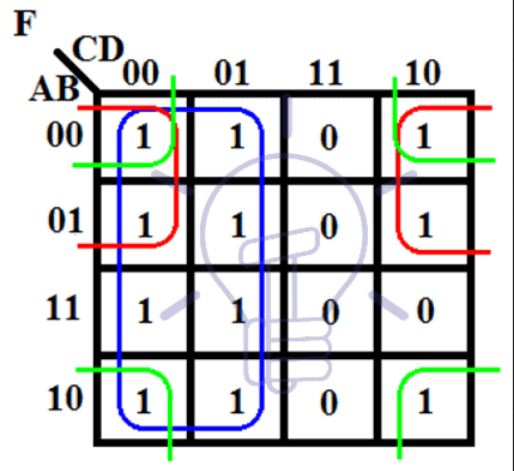
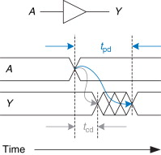
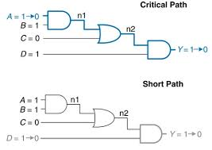

EITF65 Study
Info
Here is some information that would be nice to read before you start.
General
This is my attempt at making an interactive exam-preparation page. It assumes you are familiar with Digital Design and have done the labs, as the focus will be more on repetition than learning stuff from the beginning.
I am going to summarize the chapters I reference in the books myself. The choice of chapters was based on what I think is important in the subject, the training exam, the labs and what Gemini thought I should know. That being said, I don’t know what the exam will be like, so it is quite possible that I miss some important detail.
I know that having the physical copy of the book is allowed, but I don’t want to rely on the fact that the book is next to me. It gives me a false sense of security.
To complement this page, I will add some anki flashcards to the repo. I am not quite sure of the number of them right now, but knowing myself there will be quite a few.
Self-testing is important, so to aid with that I will add some quizzes at the end of each theory section.
Stages
Let’s get to the meat now. There will be four “stages”. The stages have no deeper meaning, they are just there to divide the content a little. I reward myself with a cookie after each completed stage.
Each stage has Concepts and a Quiz.
In each stage I will be explaining the Concepts using the Relevant Sections. I won’t be sourcing myself on every sentence.
The exercises are the odd-numbered exercises for which solutions exist in the book companion page on Canvas. I will not go through every relevant exercise as that would be too much work.
Stage 1: Core
- Concepts:
- Two’s Complement and Overflow
- Logic Minimization with K-Maps
- Timing (Propagation delay and contamination delay, \(t_{pd}\) and \(t_{cd}\))
- Relevant Sections:
- 1.4.6 Signed Binary Numbers
- 2.7 Karnaugh Maps
- 2.9 Timing
- Exercises:
- 1.55, 1.61, 1.63
- 2.31, 2.33
Stage 2: Sequential Logic & Timing Analysis
- Concepts:
- Latches & Flip-Flops
- Static Timing Analysis: Calculating Max Frequency (\(f_{max}\)) and Setup Time
- Hold Time Violations: (\(t_{hold} \leq t_{ccq} + t_{cd}\))
- Clock Skew
- Relevant Sections:
- 3.2.2 - 3.2.3: Latches and Flip-Flops
- 3.5.1 - 3.5.3: System Timing and Clock Skew
- Exercises:
- 3.33
- 3.35, 3.37
Stage 3: SystemVerilog
- Concepts:
- Always Blocks
- Assignments
- Reset Logic: Asynchronous and Synchronous
- FSM Structure
- Relevant Sections:
- 4.2: Combinational Logic
- 4.4: Sequential Logic
- 4.5.4: Blocking vs. Nonblocking Assignments.
- 4.6: FSMs in SystemVerilog.
- Exercises:
- 4.15
- 4.27
- 4.33
Stage 4: Standard Digital Modules
- Concepts:
- Counters: Up/Down counters, Gray code counters
- Shift Registers
- Arithmetic Circuits: Half/Full Adders, ALUs.
- Relevant Sections:
- 5.2.1 - 5.2.5: Adders and ALUs
- 5.4.1: Counters
- 5.4.2: Shift Registers
- Exercises:
- 5.13
- 5.25
Core
Two’s Complement is a way or representing signed binary numbers – numbers that can also be negative. Two’s complement numbers are negative when they have a 1 in the Most Significant Bit (MSB) position. Addition and subtraction works flawlessly with two’s complement numbers. To do subtraction we can reverse the sign of one addend as \(x-y\) is the same as \(x+(-y)\). The sign of a two’s complement is reversed by inverting all the bits and adding 1 to the Least Significant Bit (LSB) position.
For example, to convert \(2\) to \(-2\), we would first write \(2\) in binary, \(0010\), then reverse the bits, \(1101\), and add one to LSB, \(1110\). So \(-2 = 1110\).
The range of two’s complement is \(\left[ -2^{N-1},\ 2^{N-1} -1 \right]\), where \(N\) is the number of bits.
Adding two N-bit positive or negative numbers may cause overflow if the result is greater than \(2^{N-1} -1\) or lower than \(2^{N-1}\). Overflow occurs if the two numbers being added have the same sign bit and the result has the opposite sign bit!
To extend the number of bits a two’s complement number has, copy the sign bit into the MSB position that number of times. So, if we want to extend 4-bits to 7-bits we do like this: \(3 = 0011 = 0000011\) and \(-3 = 1101 = 1111101\).
TODO: add example 1.14 to quiz.
K-Maps take some practice to get used to. Therefore, instead of writing a whole essay about K-maps, I will link a great resource here that explains how to solve K-maps in detail. I will just summarize the rules as a reminder.
Karnaugh Maps (K-Maps) are a graphical method for simplifying Boolean equations. They work great for up to four variables. With more variables, multiple K-maps are required. A K-map can look something like this:

The rules for finding a minimized equation using a K-map are:
- User the fewest circles to cover all the 1’s.
- All the squares in each circle must contain 1’s (or Don’t Cares, X).
- Each circle must span a rectangular block that is a power of 2.
- Each circle should be as large as possible.
- A circle may wrap around the edges.
- A square containing 1 may be circled multiple times if it allows for fewer circles.
- Additional rule for Don’t Cares: They do not need to be circled if they are not helpful.
Remember to label the axis in Gray Code!
Delay can be defined as the time to change in response to an input change. In combinational logic there are two types of delays, propagation delay and contamination delay. The propagation delay \(t_{pd}\) is the maximum time from when any input changes until the output reaches its final value. The contamination delay \(t_{cd}\) is the minimum time until any output starts to change its value. Basically, \(t_{pd}\) is the time from start until everything is over and \(t_{cd}\) is the time from start until something happens.

The figure above shows a timing diagram with \(t_{pd}\) and \(t_{cd}\) visualized, for a buffer.
To find the propagation and contamination delay of a whole circuit we must consider the critical path and the short path. Simply put, the critical path is the longest path from any input to output, while the short path is the shortest path from any input to output.

Propagation delay in a circuit is sum of propagation delays of each element on the critical path. Contamination delay is the sum of the contamination delays of each element on the short path.
Quiz time!!!
Sequential Logic & Timing Analysis
Before I get to the latches and flip-flops we first need to understand what Sequential Logic is. The crucial difference between combinational and sequential logic is that sequential logic has memory. The outputs of sequential logic depend both on the current and past inputs.
A D-latch has two inputs, the data input, D, and the clock, CLK. When CLK is 1 the latch acts as a buffer, just passing through D. But when CLK is 0 the latch remembers its old value, and the output Q does not change. A Flip-Flop is simply two connected latches that solve a specific problem.
As latches are level-triggered they output values as long as the clock is high or low. This isn’t ideal as it allows for races in a circuit. Flip-Flops are edge-triggered which means they output data only when the CLK is on rising-edge. The book highlights this: A D flip-flop copies D to Q on the rising edge of the clock and remembers its state at all other times.
A flip-flop copies the input to the output on the rising edge of the clock. But what happens if the edge rises at the same time the input changes?